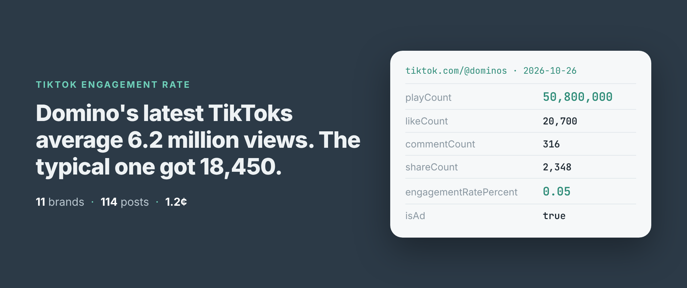
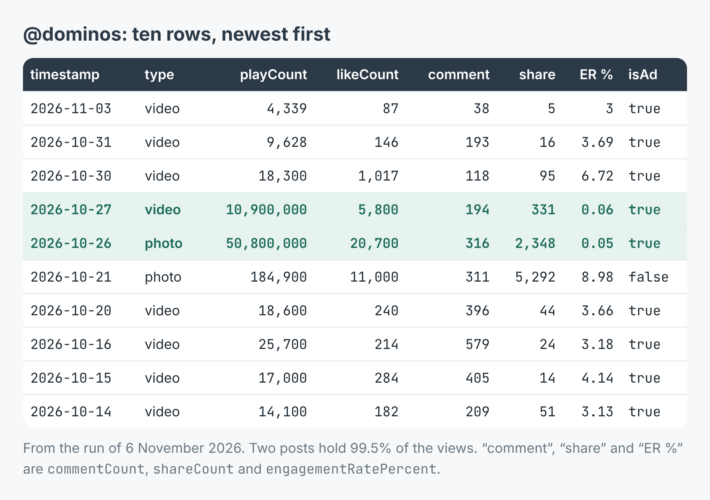
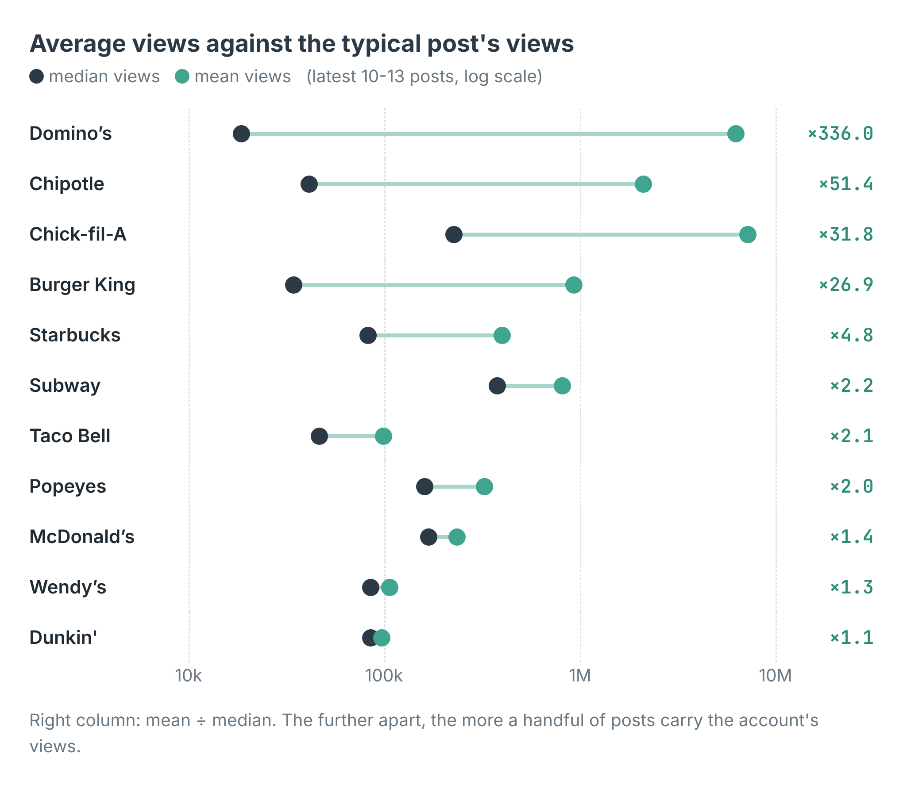
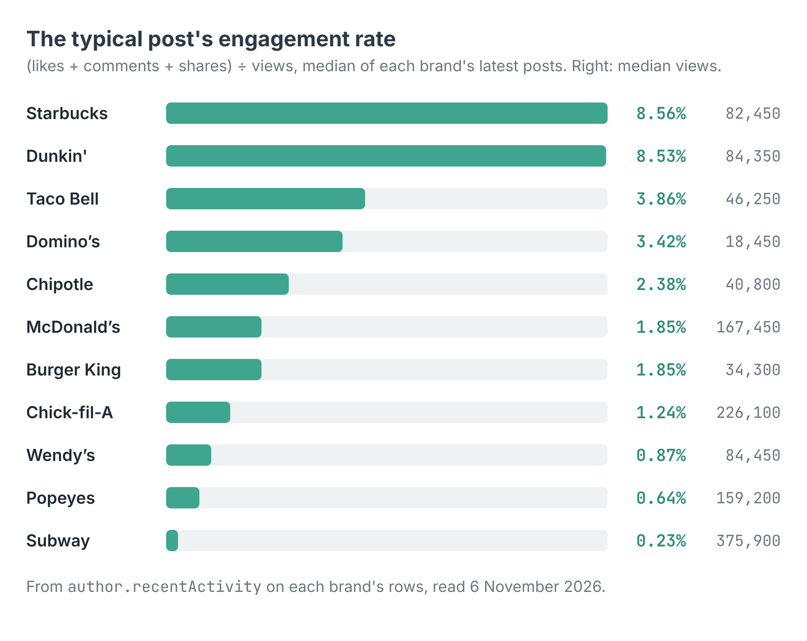

How to work out a brand's real TikTok engagement rate (11 fast-food chains, 114 posts)
I wrote this with an AI assistant. The runs, numbers and code are real, and I checked them.

Domino's latest ten TikToks average 6,199,257 views each. The typical one got 18,450.
Both numbers are true. Two of the ten posts had 50,800,000 and 10,900,000 views, and together they hold 99.5% of the account's views. The other eight sit between 4,339 and 184,900. Add the ten up and divide by ten, and you describe a post Domino's never made.
The same thing breaks the engagement rate, which is the number most people want when they size up a brand on TikTok. Add up Domino's likes, comments and shares and divide by its total views, and you get 0.08%. Take each post's own rate and pick the middle one, and you get 3.42%. More than forty times apart, from the same ten rows.
The run
I build and run a TikTok profile scraper on Apify. It reads what TikTok shows a logged-out visitor, so there's no login, no cookie and no API key. For each handle it returns the latest posts, usually 10 to 12 and 13 at most, with views, likes, comments and shares on every one, plus the account's follower count.
On the morning of 6 November I gave it twelve fast-food handles. In Node:
import { ApifyClient } from 'apify-client';
const client = new ApifyClient({ token: process.env.APIFY_TOKEN });
const run = await client.actor('simple.actor/tiktok-profile-posts')
.call({ handles: ['dominos', 'starbucks', 'subway'] });
const { items } = await client.dataset(run.defaultDatasetId)
.listItems();
for (const p of items) {
if (p.error) { console.warn(p.error); continue; }
console.log(p.ownerUsername, p.playCount, p.engagementRatePercent);
}
It took 6 minutes 15 seconds and came back with 114 posts from eleven brands. The twelfth, @kfc, I'll come back to. Each row is one post. Here are Domino's ten:

Two of ten posts hold 99.5% of the views, and both have the lowest engagement rate on the account.
engagementRatePercent is likes, comments and shares as a share of views, for that one post. The two big posts score 0.06% and 0.05%. Every other Domino's post scores between 3% and 8.98%.
Use the median, not the total
Domino's isn't unusual. I set each brand's average views beside its median views, and on four of the eleven accounts the average is more than 25 times the median.

Where the two dots sit far apart, a few posts carry the account. Domino's, Chipotle, Chick-fil-A and Burger King all look like that.
Eight posts across the eleven brands had more than five million views. Together they hold 85.2% of the 188,075,525 views in the whole run. TikTok flags all eight with isAd: true, which is its own promoted-post flag. I'd read that carefully, though: it's on 60 of the 103 posts that came back with counts, plenty of them with a few thousand views. Nine of Domino's ten carry it. What the flag can't tell you is how much money is behind a post. The view count is a better hint: three Chick-fil-A posts with 8.5 to 39.5 million views drew 0.06% to 0.12% engagement, and none of them allowed comments.
So I rank brands by the median post. The scraper does that for you: every row carries author.recentActivity, with the median views, likes, comments, shares and engagement rate across the account's latest posts.

The typical post's engagement rate for each brand, with its median views on the right.
Starbucks and Dunkin' lead at 8.56% and 8.53%, on almost the same median views, 82,450 and 84,350. Subway is last at 0.23%, though its median post had more views than anyone's, 375,900. Seven of Subway's posts are photo carousels, and the ones that reached 1.2 to 2.2 million views drew 0.08% to 0.46%. Its one post flagged isAd: false, a carousel captioned "not all heroes wear capes", had 26,300 views and 13.83%.
Medians also stop a brand's own big moment from deciding its place. Pooled over all its posts, Dunkin' would score 11.81% and Domino's 0.08%. By the median they're 8.53% and 3.42%, which is much closer to what a new post from either can expect.
What it cost
The scraper charges $0.001 per profile read. Posts are free, so a brand costs the same whether ten posts come back or thirteen. Twelve handles came to $0.012, 1.2 cents, for 114 posts. A profile that can't be read at all, private or missing, isn't charged.
The rows that need a second look
@kfc was charged and returned nothing. I ran it again on its own and got the same: read, charged, zero posts. When I opened the handle myself it wasn't the chain at all. It's an unverified account named "KFC." with no posts showing. The scraper did what it was asked. The handle was wrong, and an empty account gives you no row to notice it by. Check author.isVerified and author.nickname on the first run, and count the handles that came back.
TikTok was slow with me that morning. The run log shows 155 answers of "too many requests" and 116 timeouts, all retried on a new address. That's why twelve profiles took over six minutes. Eleven posts still couldn't be read in full, so their likes, comments and shares are null, not zero. Five accounts, McDonald's, Taco Bell, Dunkin', Burger King and Subway, came back with TikTok's rounded follower counts instead of exact ones; author.followersAreExact says which.
View counts are rounded by TikTok itself, so every engagement rate here is approximate. Fine for ranking brands, not for quoting to two decimals.
And ten posts is a short window. Starbucks posted all ten of its latest within 19.5 hours on 5 November, its holiday drinks launch, so postsPerWeek reads 77.57. Chick-fil-A's ten go back to 22 July, 0.68 a week. The scraper sees what TikTok shows a logged-out visitor, the latest 10 to 13 posts, and there's no way to page further back. To follow an account over months, run it on a schedule and keep the rows.
Make it your list
The example repo, tiktok-engagement-rate-scraper, takes any list of handles and prints each account's followers, posts per week, median views and median engagement rate, then writes them to accounts.csv, in Node and in Python. Swap the burger chains for your own field: the coffee roasters you compete with, the gyms in your city, the creators you're thinking of paying. Rank them by the median, and look at the rows behind any account whose average is far above it. The scraper is at apify.com/simple.actor/tiktok-profile-posts.